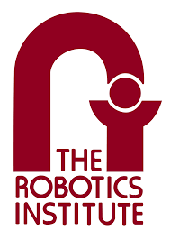

EducationMy academic journey and qualifications. |

|
Massachusetts Institute of Technology
Ph.D. in Computer Science Starting Fall 2025 NSF Graduate Research Fellow Researching how intelligence emerges in adaptive artificial systems that evolve and learn. |
|
|
University of Massachusetts Amherst
B.S. in Computer Science Expected May 2025 GPA: 4.0/4.0 Honors & Awards: Goldwater Scholar (2024), Dean's Merit Scholaship, Chancellor's Award |
Research ExperienceMy research internships and professional experience. |
|
INRIA
Research Intern, FLOWERS Team Summer 2025 Working with Prof. Pierre-Yves Oudeyer on autotelic reinforcement learning and intrinsic motivation. |
|
|
 |
Carnegie Mellon University
Research Intern, Robotics Institute Summer 2024 Worked with Prof. Katia Sycara on emergent communication between diverse agents in multi-agent reinforcement learning settings. |
|
University of Southern California
Research Intern, ICAROS Lab Summer 2023 Worked with Prof. Stefanos Nikolaidis on human-robot interaction and learning from human feedback. |
|
© 2025 Ryan Bahlous-Boldi |